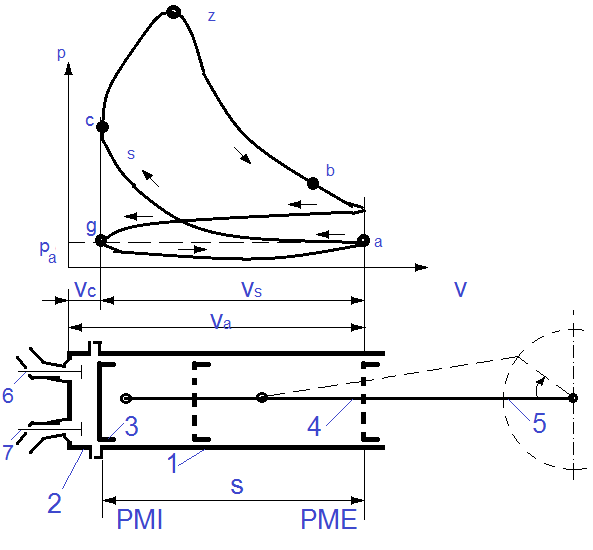

Motorul Otto
by Dumitrescu Andrei

Motorul în patru timpi este un tip de motor cu ardere internă al cărui piston face 4 curse simple într-un ciclu motor. Pistonul se mişcă într-un cilindru închis la un capăt de chiulasă. Mişcarea pistonului este asigurată de un mecanism bielă-arbore cotit şi are loc între două poziţii extreme: punctul mort interior şi punctul mort exterior.
În punctul mort interior PMI, pistonul este în interiorul cilindrului şi volumul acestuia este minim. La punctul mort exterior PME, pistonul se găseşte la cealaltă extremitate în raport cu PMI şi volumul acestuia este maxim.
Un ciclu motor are loc de-a lungul a două rotaţii ale arborelui cotit şi cuprinde patru faze, numerotate în figura alăturată cu:
- Admisia
- Compresia
- Arderea si Destinterea
- Evacuarea

Principiul de functionare
În momentul deplasării pistonului de la punctul mort interior la punctul mort exterior, supapa de admisie 6 (vezi imaginea din stânga) este deschisă şi prin urmare în cilindru intră încărcătură proaspătă (din cauza depresiunii create de mişcarea pistonului). Aşadar are loc admisia (curba g-a din diagramă). În continuare, prin deplasarea pistonului de la punctul mort exterior la punctul mort interior, are loc comprimarea încărcăturii, ambele supape (6 şi 7) fiind închise. Până ca pistonul să ajungă la punctul mort interior, încărcătura este aprinsă şi arde degajând căldură, ceea ce duce la mărirea presiunii în cilindru. Pistonul îşi continuă mişcarea şi se apropie de punctul mort exterior dinspre punctul mort interior şi se atinge presiunea maximă în punctul z datorită intrării în reacţie a majorităţii combustibilului. După punctul z începe destinderea care are loc până la deschiderea supapei de evacuare 7 în punctul b (în apropiere de punctul mort exterior). Odată cu revenirea pistonului din punctul mort exterior în punctul mort interior, supapa 7 se deschide şi are loc evacuarea gazelor din cilindru, iar succesiunea celor patru procese se repetă.